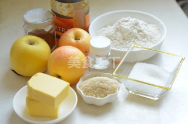
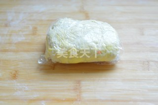
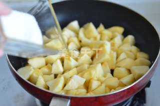
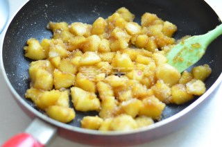
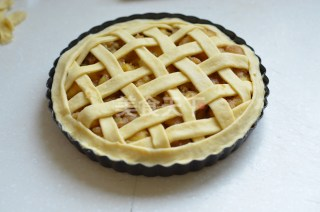
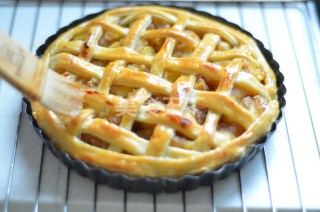

Culinary Art |
Culinary Art |
|  |  |  |
First Step: Prepare all the materials. |
Second Step: Strong flour, bread flour and salt and sift into the table, put on the cut into small pieces of butter, slowly pour cold water into the flour flour mix the butter and pressure to form a smooth dough gently with scraper, wrapped in plastic wrap, then refrigerate for 30 minutes. |
Third Step: The apples go to the skin and cut into small pieces, and the butter in the pan is heated until the bubbles disappear, turning brown and adding apples and sugar. |
|  |  |  |
Forth Step: To maintain the fire heating, with scraper fold until apple cook until brown with rum, such as alcohol evaporate moisture with cinnamon, turn off the heat will combine crumbs, mix cool, apple filling is done. | Fifth Step: Dough, taken from the refrigerator, on the chopping board has and hand powder rolling, roll rotate for 90 degrees again in half, and then along the pie crust on the outer circumference of a pie crust, pick good fore and aft. | Sixth Step: Over the surface of the pie crust to brush a layer of liquid whole egg, in a good preheat the oven to 220 degrees for the middle to bake for 15 minutes after the drop to 180 degrees and bake for 20 minutes, the apricot jam and 2 tablespoons of add a spoonful of water the microwave to fully dissolve thick, brush on the baked baked pie crust is complete. |